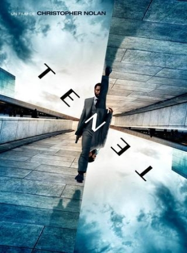
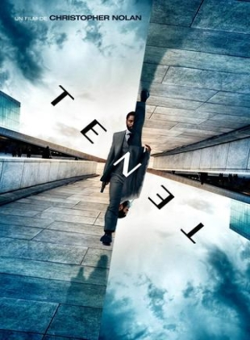

Bienvenue sur FLC flix V3
Un site de la FLCorporation | FLCorp-web
Version 3.4.0
Cette Mise à Jour est une des plus importantes de FLC Flix V3. Pourquoi? Car nous avons commencé à ajouter un système de visionnage d'épisodes de séries intégrer dans FLC-Flix! Et oui, enfin plus besoin de devoir cliquer sur l'épisode 1 qui vous emmène sur Uqload pour ensuite faire retour sur FLC Flix pour cliquer sur l'épisode 2... Nan, maintenant c'est (presque) fini. En réalité, c'est bel et bien la version finale du système mais il est seulement déployer sur quelques séries en tant que "Pre-Release". Nous envisageons bien évidemment de commencer à déployer ce système pour les Films, afin que ce soit plus facile de regarder une série ou un film sur FLC Flix! Cette 3.4 acceuile aussi l'arrivée d'une nouvelle catégorie de Film, la catégorie "Mystère"! Pour le moment, elle vous donnes seulement accès à "Mort sur le Nil" et à "Mystère à Venise" qui met en scène Hercule Poirot, jouer par Kenneth Branagh
Un site de la FLCorporation | FLCorp-web
Version 3.4.0


 
